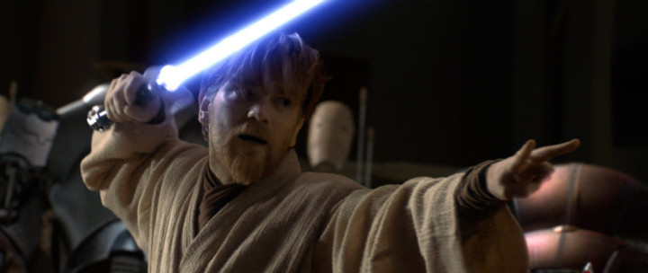

Obi Wan Kenobi
A true Master Jedi
Obi Wan Kenobi was one of the jedi masters during the end days of the republic. He was known as a master of the lightsaber discipline Soresu, a defensive form. However, before the first invasion of Naboo, he favored a more acrobatic and aggressive form called Ataru. Despite falling in love with the mandolorian senator, the duchess Satine, he stayed true to the jedi code.